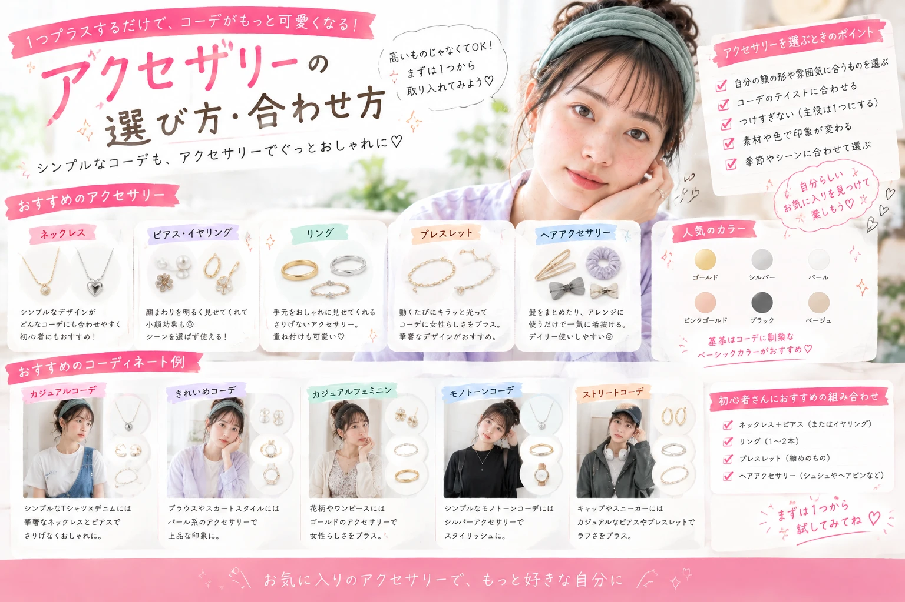

01
色
ゴールド系なら華やかに、 シルバー系ならすっきりした印象に。 服やバッグとのバランスも確認しましょう。

キレイは、日常の積み重ね。

「服は決まったけれど、アクセサリーをどう合わせればいいかわからない」 そんなファッション初心者に向けて、 アクセサリーの基本的な選び方と合わせ方を紹介します。 ネックレス、ピアス、リングなど、 ちょっとした小物を取り入れるだけでも コーディネートの印象は変えられます。
アクセサリーは面積が小さいアイテムですが、 顔まわりや手元など目につきやすい場所に使うため、 コーディネートの印象を変えやすいアイテムです。
シンプルなTシャツにネックレスを合わせたり、 いつものコーデにピアスをプラスしたりするだけでも、 いつもと違った雰囲気を楽しめます。
まずは「色・大きさ・つける場所」の 3つを意識するところから始めてみましょう。
ゴールド系なら華やかに、 シルバー系ならすっきりした印象に。 服やバッグとのバランスも確認しましょう。
大きめのアクセサリーは存在感が出やすく、 小さめなら自然に取り入れやすいのが特徴です。
ネックレス、ピアス、リングなどを すべて大きくするのではなく、 主役をひとつ決めるとまとまりやすくなります。
首元にアクセントを加えたいときに便利。 シンプルなトップスとの相性が良く、 Tシャツやブラウスにも合わせやすいアイテムです。
初心者なら細めのチェーンや 小さめのペンダントから始めると使いやすいでしょう。
顔まわりを華やかに見せたいときに活躍します。
小さめなら普段使いしやすく、 大きめのデザインならコーデのアクセントになります。
手元にさりげなくアクセントを加えられます。
シンプルなリングなら重ねづけもしやすく、 ひとつだけつけても上品に仕上げやすいアイテムです。
半袖やノースリーブなど、 手首が見える季節に取り入れやすいアイテムです。
時計やバッグなど、 他の小物とのバランスも意識してみましょう。
アクセサリーの色に迷ったら、 服の色や全体の雰囲気から考えると選びやすくなります。
| 色 | 合わせやすい服 | 印象 |
|---|---|---|
| ゴールド | ベージュ・ブラウン・アイボリー | 華やか・やわらかい・上品 |
| シルバー | ブラック・グレー・ホワイト | すっきり・クール・洗練された印象 |
| ピンクゴールド | ピンク・ベージュ・淡色 | やさしい・フェミニン |
| カラフル | シンプルな服装 | ポップ・アクセント |
首元が比較的詰まったトップスには、 短めのネックレスやペンダントを合わせると 胸元にアクセントを作りやすくなります。
V字のラインに合わせて、 縦長のペンダントなどを選ぶと 首元をすっきり見せやすくなります。
シャツの襟を開けてネックレスを見せたり、 あえてアクセサリーを控えて すっきり着こなしたりするのもおすすめです。
シンプルなワンピースには、 ネックレスをひとつ加えるだけでも コーディネートに変化をつけられます。
シンプルな白Tシャツに 小さめのネックレスを合わせるだけでも、 顔まわりにアクセントを作れます。
きれいめなブラウスには 小ぶりのピアスやイヤリングを合わせると、 上品な雰囲気にまとめやすくなります。
秋冬のニットコーデには、 手元にリングをプラスすると シンプルすぎない印象になります。
シンプルなワンピースなら、 ネックレスやイヤリングをひとつ加えて 華やかさをプラスできます。
アクセサリーはたくさんつければ おしゃれに見えるとは限りません。
大きめのピアスをつけるなら、 ネックレスは控えめにするなど、 主役を決めると全体がまとまりやすくなります。
ゴールド、シルバー、カラフルなアクセサリーを 一度にたくさん使うより、 色味を揃えると統一感を出しやすくなります。
柄物や装飾の多い服には控えめなアクセサリー、 シンプルな服には少し存在感のあるアクセサリーなど、 バランスを意識してみましょう。
| 季節 | おすすめ | ポイント |
|---|---|---|
| 春 | 小ぶりのピアス・淡色アクセサリー | 軽やかな雰囲気に |
| 夏 | ブレスレット・イヤリング | 手首や顔まわりを華やかに |
| 秋 | ゴールド系・リング | 落ち着いた服にアクセント |
| 冬 | 大きめピアス・ネックレス | 厚手の服に負けない存在感を |
アクセサリーは、 たくさん買い揃える必要はありません。
毎日の服に合わせやすい シンプルなネックレスやピアスなどから始めると、 少ないアイテムでも使い回しやすくなります。
ゴールドやシルバーなど、 手持ちの服と合わせやすい色を選ぶと コーディネートの幅を広げやすくなります。
アクセサリーはプチプラでも デザインの種類が豊富です。 無理のない予算でお気に入りを探してみましょう。
まずは普段の服に合わせやすい シンプルなネックレスやピアス、 イヤリングなどから始めると使いやすいでしょう。
どちらが正解というわけではありません。 手持ちの服の色や、目指したい雰囲気に合わせて選ぶと コーディネートを作りやすくなります。
もちろん大丈夫です。 ただし、両方を大きくすると 顔まわりが華やかになりすぎることもあるため、 片方を控えめにするとバランスを取りやすくなります。
価格だけでおしゃれが決まるわけではありません。 服装とのバランスや色を揃えることで、 コーディネート全体をすっきり見せやすくなります。
アクセサリー選びに迷ったら、 まずは色・大きさ・バランスを 意識してみましょう。
最初からたくさんのアイテムを揃える必要はありません。 シンプルなネックレスやピアスなど、 普段の服に合わせやすいアイテムを ひとつ取り入れるだけでも十分です。
少ない予算でも、 小物を上手に使えばいつものコーディネートに 新しい印象をプラスできます。